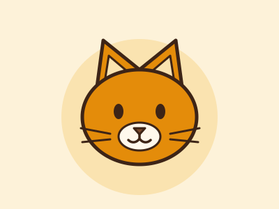
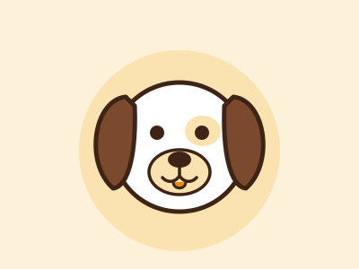

Disponível
Disponível
Animal publicado!
Ele já aparece na vitrine de adoção para quem mora perto. Os pedidos chegam aqui no painel.
Rascunho salvo
Ele fica guardado aqui no painel. Ninguém vê o rascunho até você publicar.
Campanha publicada!
Ela já está na página de campanhas. Compartilhe o link para chegar a mais gente.
Convite de visita enviado
Juliana recebe uma mensagem para escolher o melhor horário. A situação do pedido muda quando ela confirmar.
Pedido recusado
Enviamos uma mensagem gentil para o adotante, com sugestões de outros animais parecidos.
Perfil atualizado
As mudanças já aparecem na página de ONGs.
Senha trocada
Use a senha nova da próxima vez que entrar.
Olá, Amigos de Patas!
Chegaram 2 pedidos de adoção desde a sua última visita.
- animais para adoção
- 4

- pedidos novos
- 2
- adoções em 2026
- 18
- visitas ao perfil no mês
- 1.240
Pedidos de adoção
2 novos| Adotante | Animal | Recebido em | Situação | Detalhes |
|---|---|---|---|---|
|
Juliana M.Diadema, SP
|
Churros | 08/10/2026 | Novo |
Ver respostas
|
|
Carlos A.São Bernardo do Campo, SP
|
Thor | 07/10/2026 | Novo |
Ver respostas
|
|
Fernanda R.Diadema, SP
|
Churros | 05/10/2026 | Em conversa |
Ver respostas
|
|
Rafael T.Santo André, SP
|
Pipoca | 02/10/2026 | Visita em 12/10, 15h |
Ver respostas
|
|
Beatriz L.Diadema, SP
|
Luna | 20/09/2026 | Adoção concluída |
Ver respostas
|
Meus animais
Ver na vitrine-
-
Disponível
-

Visita marcada -

Rascunho - Cadastrar outro animal
Campanhas
Nova campanhaRação para o inverno Ativa
Arrecadação até 31/10/2026
310 kg de 500 kg
Bazar beneficente Encerrada
Evento em 14/09/2026
R$ 2.380 arrecadados
Seu perfil está 80% completo
Perfis completos passam mais confiança para quem vai adotar.
- Logo
- Apresentação
- Documentos
- Endereço
- Fotos da sede